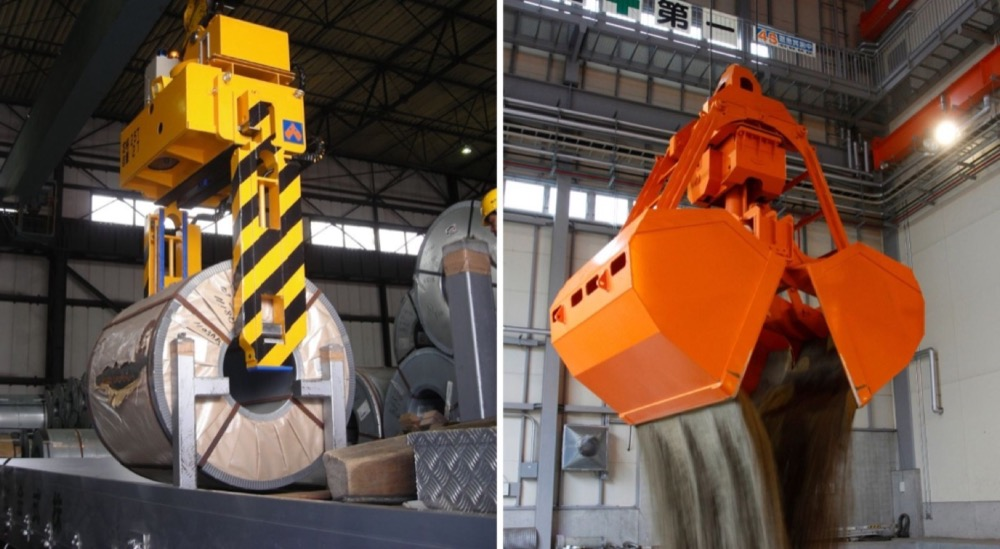
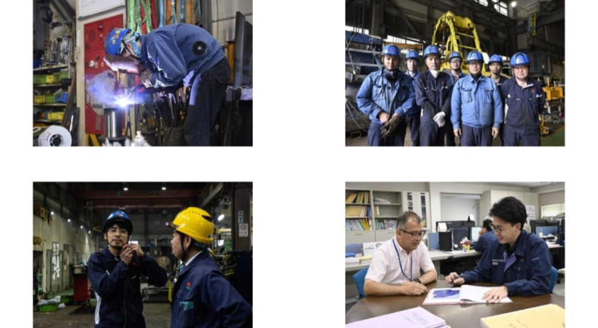
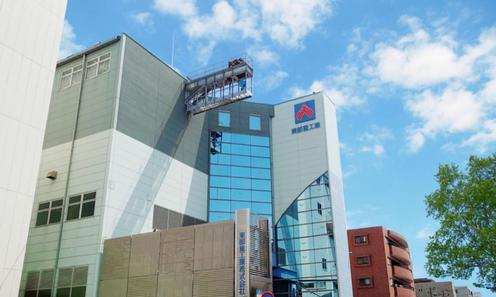

浦安の「つかむ」専門の会社って？
豊永 健Ken Toyonaga
東部重工業株式会社 代表取締役社長
大学院修士課程終了後電機メーカーに入社。特許事務所に転職し弁理士資格を取得後に独立。2018年に東部重工業に入社。
企業サイトを見るTRACK 01
浦安の「つかむ」専門の会社って？

東部重工業株式会社は、千葉県浦安市にある会社だ。グラブバケットやコイルリフターといった「つかむ」専門の産業用機械を製造、設置、販売している。本社から少し離れた海岸沿いには製品のテストを行うことができる大規模な生産工場があり、なんとサッカーコート約1面分の敷地面積を誇る。
港や倉庫で石炭や木材チップなどのバラ積み貨物を移動させるときに活躍するグラブバケット。この造船所向け・港湾事業者向けのグラブバケットの完成品メーカーとして高い認知度を誇り、アフターサービスも充実していることから、60年以上にわたり国内外からの取引先から信頼され続けている存在だ。
ニッチでビッグスケールな事業を展開している、東部重工業株式会社の今、そしてこれからについて聞いてみた。
TRACK 02
全社一丸となって目指す100年企業

東部重工業株式会社は、前身の会社の設立から60年の長きにわたりグラブバケットなどの荷役運搬機械を設計・製造・販売する事業を続けている。豊永社長は、先代社長とのつながりで2018年に入社してすぐに取締役に就任し、先代の体調不良もあり、入社半年後には副社長、その一年後には社長となった。
副社長就任以降は、長い歴史で蓄積してきた「信頼」を維持し、さらに厚くしていくことを念頭に経営してきたと語る。現在は、全社一丸となって「100年続く企業」を目指し、さらに世界No.1のグラブバケットメーカーとなるべく、海外生産も視野に入れながら、生産力拡大・海外拡販に力を入れている。
